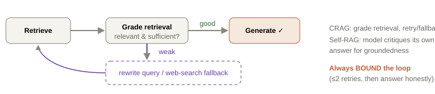

Chapter 8. Advanced RAG: fixing every failure
Each technique here targets a specific failure from Chapter 7's taxonomy. Add them in order, measure after each, keep what earns its complexity. We'll compute BM25 and Reciprocal Rank Fusion by hand (interviewers ask), then cover query transformation, cross-encoder reranking, contextual retrieval, Graph RAG, and self-correcting loops.
8.1 Hybrid search: BM25 + vectors
Fixes: vocabulary mismatch, exact-term retrieval (IDs, function names, error codes). Dense vectors capture meaning but can miss exact tokens; BM25 (keyword) nails exact terms but misses paraphrases. Run both, fuse the results — the combination reliably beats either alone.
BM25, demystified
BM25 scores a document for a query term using three intuitions: rarer terms matter more (IDF), more occurrences help but with diminishing returns (saturation), and long documents get a mild penalty (they contain more words by chance).
Doc D: "refund" occurs f=3 times, |D|=120 words, avgdl=100, params k₁=1.5, b=0.75.
Length norm: 1 − b + b·|D|/avgdl = 1 − 0.75 + 0.75·(120/100) = 0.25 + 0.9 = 1.15
Saturation term: (3·2.5) / (3 + 1.5·1.15) = 7.5 / 4.725 = 1.587
Score contribution = 4.55 × 1.587 ≈ 7.22.
Note the saturation: going from f=3 to f=6 does NOT double the score — that's the "diminishing returns" that stops keyword-stuffed docs from dominating, BM25's key advantage over raw TF-IDF.
Reciprocal Rank Fusion — merging two ranked lists
Dense and BM25 produce scores on incomparable scales, so we fuse by rank, not score. RRF gives each document points based on its position in each list:
RRF(X) = 1/(60+1) + 1/(60+5) = 0.01639 + 0.01538 = 0.03177
RRF(Y) = 1/(60+2) + 1/(60+2) = 0.01613 + 0.01613 = 0.03226
Y edges out X — being solidly good in both lists beats being #1 in one and mediocre in the other. That robustness, with no score calibration and one tiny constant, is why RRF is the industry default fusion method.
8.2 Query transformation: fix the question before searching
Fixes: vague queries, multi-hop, vocabulary gaps.
- Query rewriting: an LLM cleans a messy query ("it's broken" → "why does the checkout API return HTTP 500?"). Cheap, high ROI.
- Multi-query expansion: generate 3–4 phrasings, retrieve for each, union the results — covers vocabulary variance.
- HyDE (Hypothetical Document Embeddings): ask the LLM to write a fake answer, embed THAT, and search with it. Counterintuitive but effective: a hypothetical answer looks more like the real document (same vocabulary, same form) than the terse question does, so it lands closer in embedding space.
- Decomposition: break a multi-hop question into sub-questions, retrieve for each, then synthesize. This is how you answer "which team owns the service that calls X" — find the caller, then find its owner.
- Step-back prompting: ask a more general question first to retrieve foundational context, then the specific one.
8.3 Two-stage retrieval: reranking with cross-encoders
Fixes: low precision, lost-in-the-middle.
So: stage 1 (bi-encoder, hybrid) retrieves ~50 candidates fast; stage 2 (cross-encoder) rescores those 50 and keeps the top 5. You get bi-encoder speed with near cross-encoder precision — and putting only the best 5, best-ordered, into the prompt directly counters lost-in-the-middle.
8.4 Contextual retrieval — the biggest simple win
Fixes: chunk-boundary context loss, ambiguous chunks. Problem: a chunk reading "Revenue grew 3% that quarter" is useless without knowing which company, which quarter. Fix (Anthropic, 2024): at index time, have a cheap LLM prepend 1–2 sentences of situating context to each chunk ("From Acme's Q2 2024 earnings report, revenue section:") before embedding. Anthropic reported retrieval-failure reductions of ~35–50% — a large gain for a simple, one-time preprocessing step. It pairs especially well with hybrid search.
8.5 Graph RAG — for relationships and global questions
Fixes: multi-hop, "how are X and Y connected", corpus-wide summarization. Standard RAG retrieves isolated passages, so it can't answer questions requiring the connections between facts. Graph RAG (Microsoft, 2024): at index time, extract entities and relationships into a knowledge graph, cluster it into communities, and pre-summarize each community. At query time, traverse the graph and/or use community summaries.
- Local questions ("what does function X call?") → walk the graph from node X.
- Global questions ("what are the main themes across all these documents?") → aggregate community summaries — something no top-k passage retrieval can do, because the answer isn't in any single passage.
Cost: entity/relation extraction over the whole corpus is LLM-heavy and slower to index. Use Graph RAG when relationship and global questions are core to your product (RepoSage's "why" and "who owns what" questions are exactly this), not as a default.
8.6 Self-correcting RAG — CRAG and Self-RAG
Fixes: hallucination on retrieval gaps, low-quality retrievals slipping through.

- CRAG (Corrective RAG): a lightweight grader scores retrieved chunks. If they're weak, don't proceed — rewrite the query, or fall back to web search, then retry.
- Self-RAG: the model emits "reflection" signals critiquing whether its own answer is grounded in the retrieved evidence, and retrieves more if not.
Both trade latency and cost for reliability. The universal rule: bound the loop (max ~2 retries) or you'll build something that spins forever burning money. This loop is the beating heart of RepoSage's critic agent (Chapter 12).
8.7 Putting it together — the order that works
Don't add all of this at once. When quality is short of the bar, add in this order and measure (Chapter 9) after each:
- Fix chunking (structure-aware + overlap) — often the single biggest gain
- Add contextual retrieval — cheap, large win
- Add hybrid search (BM25 + RRF) — fixes vocabulary/exact-term misses
- Add cross-encoder reranking — fixes precision + lost-in-the-middle
- Add query transformation (rewrite/HyDE/decompose) — fixes vague and multi-hop
- Add Graph RAG and/or self-correction — for relationship/global questions and gap-hallucination
labs/08-advanced-rag/ — extend Lab 07: implement BM25 + RRF (verify the hand-computed numbers), add a cross-encoder reranker and HyDE, then re-run your failure set and produce a before/after table attributing each fix to each failure. A minimal knowledge-graph build is included. npm run lab08.Interview ammunition
What is hybrid search and why does it beat pure vector search?
Run dense (semantic) and sparse (BM25 keyword) retrieval, then fuse — usually with Reciprocal Rank Fusion. Vectors capture paraphrase/meaning but miss exact tokens (product IDs, function names, rare jargon, error codes); BM25 nails exact terms but misses synonyms. Together they cover each other's blind spots. RRF fuses by rank (1/(k+rank)), avoiding the need to calibrate incomparable score scales. It's the reliable default for production RAG.
Bi-encoder vs cross-encoder — when and why?
Bi-encoder encodes query and doc separately, so doc vectors are precomputed and search is fast — but query and doc never interact, capping accuracy. Cross-encoder concatenates query+doc and runs full attention over both, judging relevance precisely, but can't be precomputed and is too slow over a whole corpus. So: bi-encoder for stage-1 recall (get 50 candidates), cross-encoder to rerank those 50 to a precise top-5. Best of both.
Explain HyDE and why embedding a fake answer helps.
Instead of embedding the question, have the LLM write a hypothetical answer and embed that. A question and its answer often share little surface form ("How do I reset?" vs "To reset, navigate to Settings…"), so the question embeds far from the real doc. A hypothetical answer mimics the doc's vocabulary and structure, landing closer in embedding space — improving retrieval even though the fake answer may be factually off, because we only use it to search, not to answer.
When would you reach for Graph RAG over standard RAG?
When questions depend on relationships or span the whole corpus: multi-hop ("which team owns the service that calls X"), connection queries ("how do A and B relate"), or global synthesis ("main themes across all docs") — none answerable from isolated top-k passages. Graph RAG extracts entities/relations into a graph and pre-summarizes communities. Cost is heavy index-time extraction, so use it when those question types are core, not by default.
How do you keep a self-correcting RAG loop from running forever or exploding cost?
Hard bound the iterations (e.g., ≤2 retries), require the grader to justify a retry with a concrete gap, cap total tokens/latency per query, and always have a terminal "answer honestly with what we have / say we couldn't find it" branch. Self-correction (CRAG/Self-RAG) improves reliability but each loop multiplies cost and latency, so the budget and the exit condition are part of the design, not an afterthought.
Whiteboard summary
Hybrid = BM25 (IDF · saturating TF · length norm) + vectors, fused by RRF (Σ 1/(60+rank)) — fuse by rank, not score.
Query transform: rewrite, multi-query, HyDE (embed a fake answer), decompose (multi-hop).
Two-stage: bi-encoder recall 50 → cross-encoder rerank to 5 (precision + beats lost-in-middle).
Contextual retrieval: LLM-prepend chunk context before embedding — cheap, ~35–50% fewer retrieval misses.
Graph RAG: entities+relations graph + community summaries → multi-hop & global questions.
CRAG/Self-RAG: grade retrieval/answer, retry — ALWAYS bounded.
Add in order, measure after each. Complexity must earn its place.
Further reading
- HyDE (2022) · GraphRAG (Microsoft, 2024) · CRAG (2024) · Self-RAG (2023)
- Anthropic — Contextual Retrieval · Weaviate — Hybrid Search Explained
- Cohere Rerank · NirDiamant/RAG_Techniques — dozens of runnable patterns